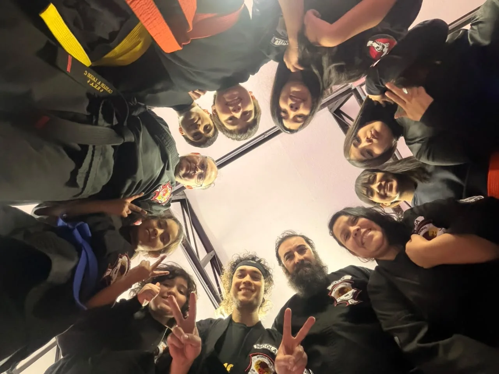
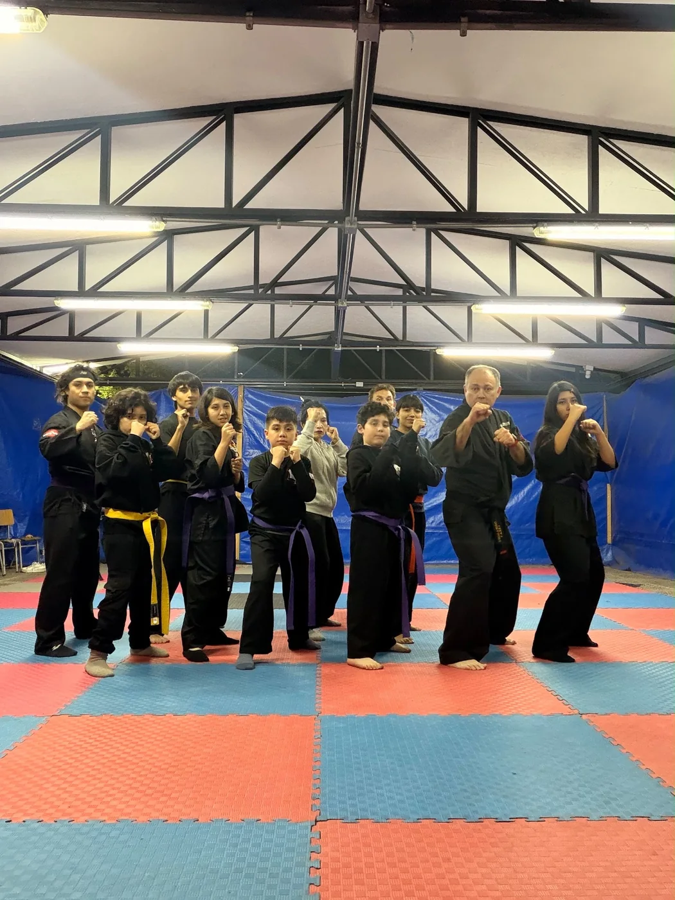
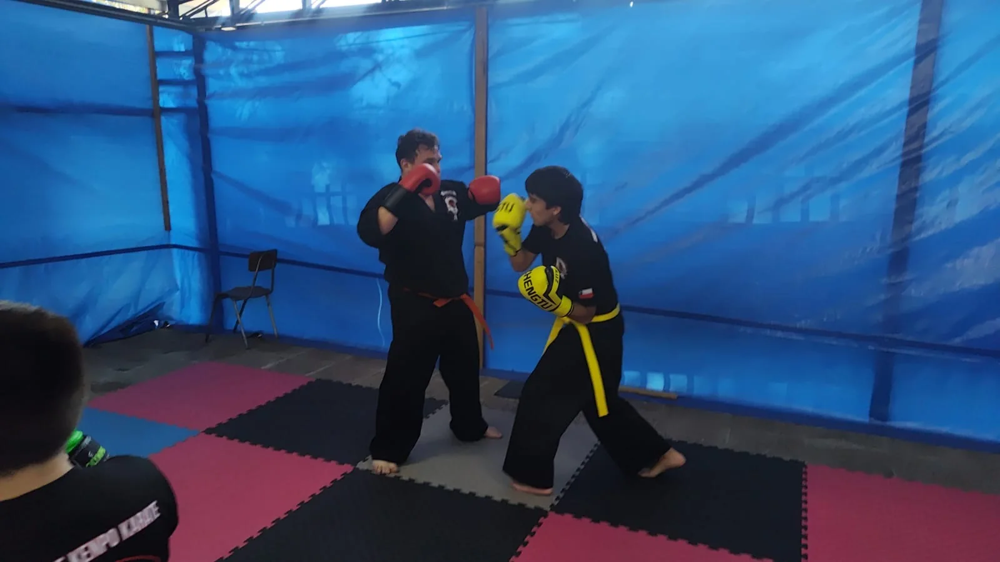
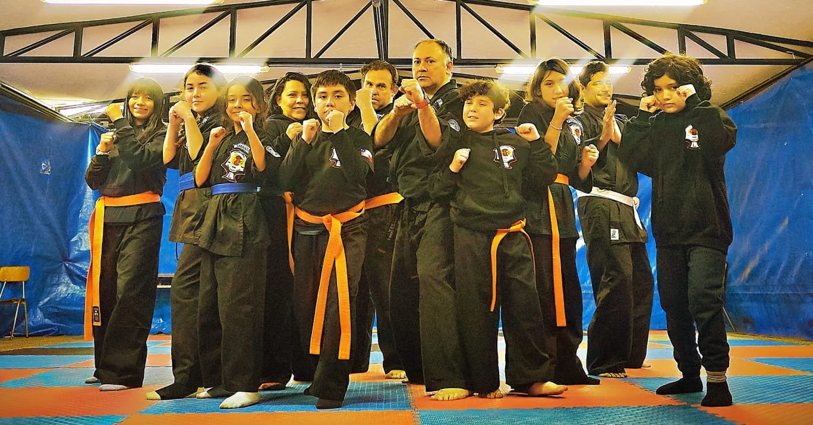
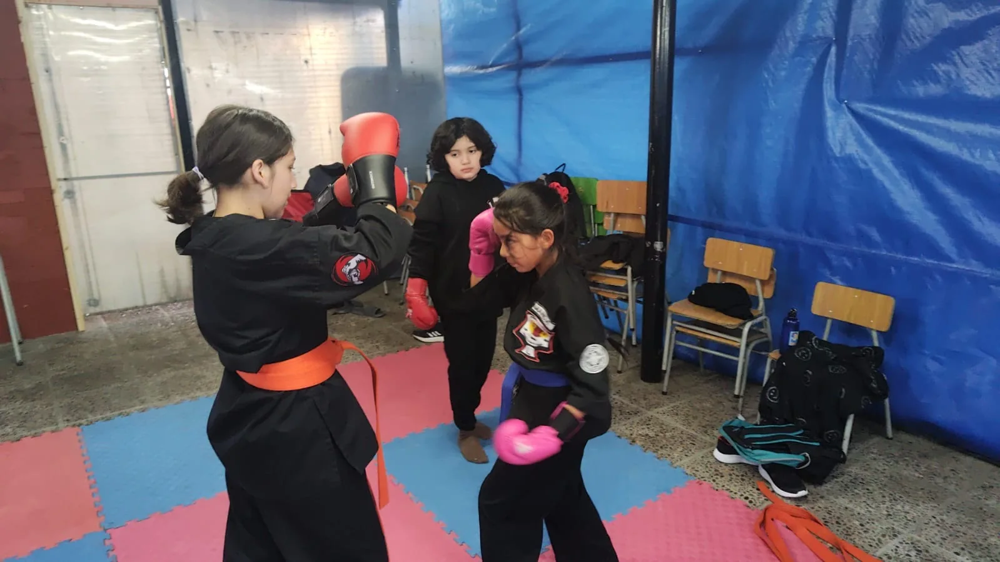
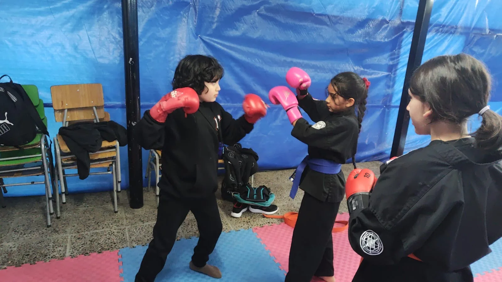
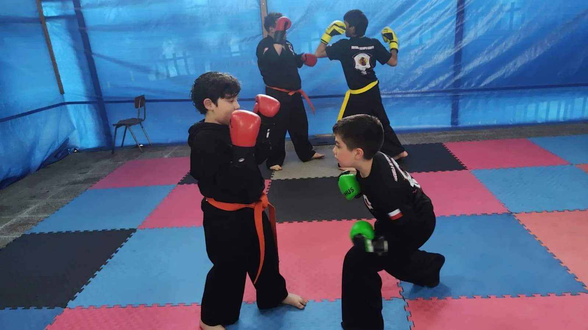
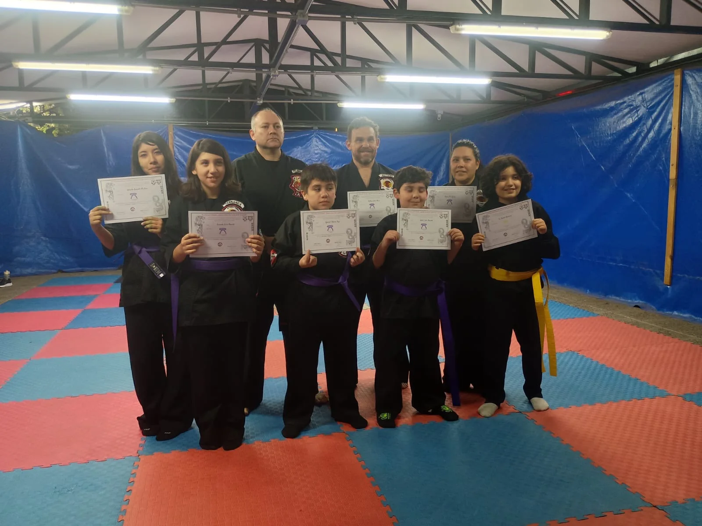

HUECHURABA · SANTIAGO DE CHILE
DISCIPLINA.
RESPETO.
CONSTANCIA.
Una escuela de Kenpo Karate orientada al desarrollo integral, la disciplina y la confianza, para alumnos desde los 10 años.
Un lugar para aprender, avanzar y crecer.
International Lagos Kenpo Karate Studio es una escuela dedicada a la práctica del Kenpo Karate, donde el entrenamiento combina técnica, preparación física, disciplina y compañerismo.
El objetivo no es solamente aprender a combatir: es desarrollar hábitos, autocontrol, respeto y confianza para enfrentar los desafíos dentro y fuera del tatami.

Más que una técnica.
Una forma de vida.
El entrenamiento trabaja desplazamientos, golpes, defensas, coordinación, condición física y aplicación práctica, siempre dentro de un ambiente de respeto y aprendizaje progresivo.

INSTRUCTOR
Maestro
Carlos Lagos
El Maestro Carlos Lagos es el instructor de International Lagos Kenpo Karate Studio, guiando el proceso de formación de los alumnos con foco en técnica, disciplina y desarrollo personal.
El entrenamiento se adapta al nivel de cada practicante, construyendo progresivamente las herramientas necesarias para avanzar en el camino del Kenpo Karate.
CONSULTAR POR CLASES →El entrenamiento
en acción.






¿Listo para
comenzar?
Ven a conocer el Dojo y descubre el camino del Kenpo Karate.
Huechuraba, Santiago de Chile
19:30 a 21:00 hrs.